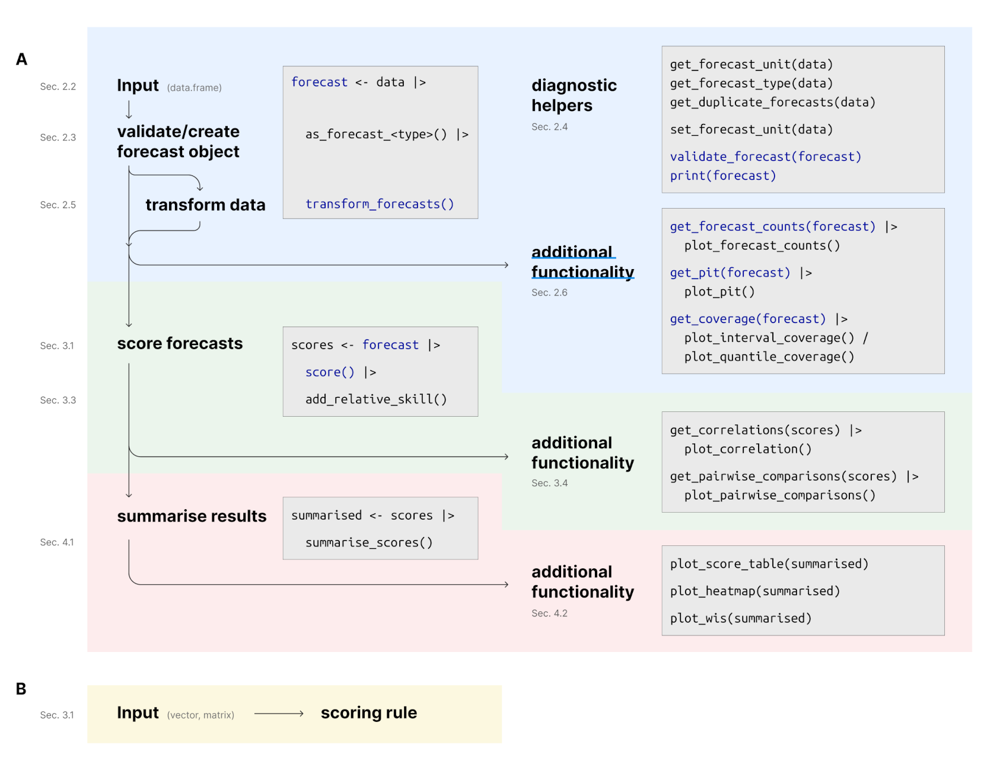

Note: This documentation refers to the development version of scoringutils. You can also view the documentation of the stable version.
The scoringutils package facilitates the process of evaluating forecasts in R, using a convenient and flexible data.table-based framework. It provides broad functionality to check the input data and diagnose issues, to visualise forecasts and missing data, to transform data before scoring, to handle missing forecasts, to aggregate scores, and to visualise the results of the evaluation. The package is easily extendable, meaning that users can supply their own scoring rules or extend existing classes to handle new types of forecasts.
The package underwent a major re-write. The most comprehensive documentation for the updated package is the revised version of our original scoringutils paper.
Another good starting point are the vignettes on Getting started, Details on the metrics implemented and Scoring forecasts directly.
For further details on the specific issue of transforming forecasts for scoring see:
Nikos I. Bosse, Sam Abbott, Anne Cori, Edwin van Leeuwen, Johannes Bracher* and Sebastian Funk* (*: equal contribution) (2023).
Scoring epidemiological forecasts on transformed scales, PLoS Comput Biol 19(8): e1011393 https://doi.org/10.1371/journal.pcbi.1011393
Installation
Install the CRAN version of this package using
install.packages("scoringutils")Install the unstable development version from GitHub using
remotes::install_github("epiforecasts/scoringutils", dependencies = TRUE)Quick start
Forecast types
scoringutils currently supports scoring the following forecast types: - binary: a probability for a binary (yes/no) outcome variable. - point: a forecast for a continuous or discrete outcome variable that is represented by a single number. - quantile: a probabilistic forecast for a continuous or discrete outcome variable, with the forecast distribution represented by a set of predictive quantiles. - sample: a probabilistic forecast for a continuous or discrete outcome variable, with the forecast represented by a finite set of samples drawn from the predictive distribution.
Input formats and input validation
The expected input format is generally a data.frame (or similar) with required columns observed, predicted, and model that holds the forecasts and observed values. Exact requirements depend on the forecast type. For more information, have a look at the paper, call ?as_forecast(), or have a look at the example data provided in the package (example_binary, example_point, example_quantile, example_sample_continuous, example_sample_discrete).
Before scoring, input data needs to be validated and transformed into a forecast object using the function as_forecast().
forecast_quantile <- example_quantile |>
as_forecast(
forecast_unit = c(
"location", "forecast_date", "target_end_date", "target_type", "model", "horizon"
),
forecast_type = "quantile"
)
#> ℹ Some rows containing NA values may be removed. This is fine if not
#> unexpected.
print(forecast_quantile, 2)
#> ℹ Some rows containing NA values may be removed. This is fine if not
#> unexpected.
#> Forecast type:
#>
#> quantile
#>
#> Forecast unit:
#>
#> location, forecast_date, target_end_date, target_type, model, and horizon
#>
#> Key: <location, target_end_date, target_type>
#> observed quantile_level predicted location forecast_date target_end_date
#> <num> <num> <int> <char> <Date> <Date>
#> 1: 127300 NA NA DE <NA> 2021-01-02
#> 2: 4534 NA NA DE <NA> 2021-01-02
#> ---
#> 20544: 78 0.975 611 IT 2021-07-12 2021-07-24
#> 20545: 78 0.990 719 IT 2021-07-12 2021-07-24
#> target_type model horizon
#> <char> <char> <num>
#> 1: Cases <NA> NA
#> 2: Deaths <NA> NA
#> ---
#> 20544: Deaths epiforecasts-EpiNow2 2
#> 20545: Deaths epiforecasts-EpiNow2 2The forecast unit
For quantile-based and sample-based forecasts, a single prediction is represented by a set of several quantiles (or samples) from the predictive distribution, i.e. several rows in the input data. scoringutils therefore needs to group rows together that form a single forecast. scoringutils uses all other existing columns in the input data to achieve this - the values in all other columns should uniquely identify a single forecast. Additional columns unrelated to the forecast unit can mess this up. The forecast_unit argument in as_forecast() makes sure that only those columns are retained which are relevant for defining the unit of a single forecast.
Scoring forecasts
Forecasts can be scored by calling score() on a validated forecast object.
scores <- forecast_quantile |>
score()score() takes an additional argument, metrics, with a list of scoring rules. Every forecast type has a default list of metrics. You can easily add your own scoring functions, as long as they conform with the format for that forecast type. See the paper for more information.
You can summarise scores using the function summarise_scores(). The by argument is used to specify the desired level of summary. fun let’s you specify any summary function, although it is recommended to stick to the mean as a primary summary function, as other functions can lead to improper scores.
scores |>
summarise_scores(by = c("model", "target_type")) |>
summarise_scores(by = c("model", "target_type"), fun = signif, digits = 3)
#> model target_type wis overprediction underprediction
#> <char> <char> <num> <num> <num>
#> 1: EuroCOVIDhub-ensemble Cases 17900.0 10000.00 4240.0
#> 2: EuroCOVIDhub-baseline Cases 28500.0 14100.00 10300.0
#> 3: epiforecasts-EpiNow2 Cases 20800.0 11900.00 3260.0
#> 4: EuroCOVIDhub-ensemble Deaths 41.4 7.14 4.1
#> 5: EuroCOVIDhub-baseline Deaths 159.0 65.90 2.1
#> 6: UMass-MechBayes Deaths 52.7 8.98 16.8
#> 7: epiforecasts-EpiNow2 Deaths 66.6 18.90 15.9
#> dispersion bias interval_coverage_50 interval_coverage_90
#> <num> <num> <num> <num>
#> 1: 3660.0 -0.05640 0.391 0.805
#> 2: 4100.0 0.09800 0.328 0.820
#> 3: 5660.0 -0.07890 0.469 0.789
#> 4: 30.2 0.07270 0.875 1.000
#> 5: 91.4 0.33900 0.664 1.000
#> 6: 26.9 -0.02230 0.461 0.875
#> 7: 31.9 -0.00513 0.420 0.908
#> interval_coverage_deviation ae_median
#> <num> <num>
#> 1: -0.1020 24100.0
#> 2: -0.1170 38500.0
#> 3: -0.0696 27900.0
#> 4: 0.2040 53.1
#> 5: 0.1210 233.0
#> 6: -0.0249 78.5
#> 7: -0.0452 105.0Package workflow
The following depicts the suggested workflow for evaluating forecasts with scoringutils (sections refer to the paper). Please find more information in the paper, the function documentation and the vignettes.

Citation
If you are using scoringutils in your work please consider citing it using the output of citation("scoringutils") (or print(citation("scoringutils"), bibtex = TRUE)):
#> To cite scoringutils in publications use the following. If you use the
#> CRPS, DSS, or Log Score, please also cite scoringRules.
#>
#> Nikos I. Bosse, Hugo Gruson, Sebastian Funk, Anne Cori, Edwin van
#> Leeuwen, and Sam Abbott (2022). Evaluating Forecasts with
#> scoringutils in R, arXiv. DOI: 10.48550/ARXIV.2205.07090
#>
#> To cite scoringRules in publications use:
#>
#> Alexander Jordan, Fabian Krueger, Sebastian Lerch (2019). Evaluating
#> Probabilistic Forecasts with scoringRules. Journal of Statistical
#> Software, 90(12), 1-37. DOI 10.18637/jss.v090.i12
#>
#> To see these entries in BibTeX format, use 'print(<citation>,
#> bibtex=TRUE)', 'toBibtex(.)', or set
#> 'options(citation.bibtex.max=999)'.How to make a bug report or feature request
Please briefly describe your problem and what output you expect in an issue. If you have a question, please don’t open an issue. Instead, ask on our Q and A page.
Contributing
We welcome contributions and new contributors! We particularly appreciate help on priority problems in the issues. Please check and add to the issues, and/or add a pull request.
Code of Conduct
Please note that the scoringutils project is released with a Contributor Code of Conduct. By contributing to this project, you agree to abide by its terms.